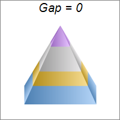
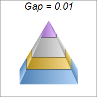
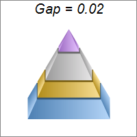
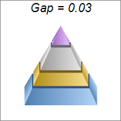
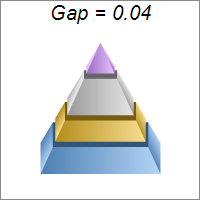
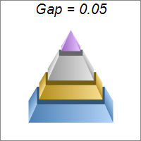

This example demonstrates the effects of different pyramid layer gap sizes, configured with PyramidChart.setLayerGap.
ChartDirector 7.1 (C++ Edition)
Pyramid Gap






Source Code Listing
#include "chartdir.h"
#include <stdio.h>
void createChart(int chartIndex, const char *filename)
{
char buffer[1024];
// The data for the pyramid chart
double data[] = {156, 123, 211, 179};
const int data_size = (int)(sizeof(data)/sizeof(*data));
// The colors for the pyramid layers
int colors[] = {0x66aaee, 0xeebb22, 0xcccccc, 0xcc88ff};
const int colors_size = (int)(sizeof(colors)/sizeof(*colors));
// The layer gap
double gap = chartIndex * 0.01;
// Create a PyramidChart object of size 200 x 200 pixels, with white (ffffff) background and
// grey (888888) border
PyramidChart* c = new PyramidChart(200, 200, 0xffffff, 0x888888);
// Set the pyramid center at (100, 100), and width x height to 60 x 120 pixels
c->setPyramidSize(100, 100, 60, 120);
// Set the layer gap
sprintf(buffer, "Gap = %g", gap);
c->addTitle(buffer, "Arial Italic", 15);
c->setLayerGap(gap);
// Set the elevation to 15 degrees
c->setViewAngle(15);
// Set the pyramid data
c->setData(DoubleArray(data, data_size));
// Set the layer colors to the given colors
c->setColors(Chart::DataColor, IntArray(colors, colors_size));
// Output the chart
c->makeChart(filename);
//free up resources
delete c;
}
int main(int argc, char *argv[])
{
createChart(0, "pyramidgap0.png");
createChart(1, "pyramidgap1.png");
createChart(2, "pyramidgap2.png");
createChart(3, "pyramidgap3.png");
createChart(4, "pyramidgap4.png");
createChart(5, "pyramidgap5.png");
return 0;
}